Calibrating Interval Estimates using the Bootstrap
Review
Point and Interval Estimation
$$ \newcommand{X}{} \newcommand{Y}{}
$$
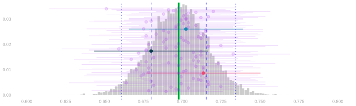
- In last week, we talked about estimating population frequencies.
- Our point estimates were frequencies in a random sample drawn from the population.
- To characterize our uncertaintly, we used interval estimates.
- In particular, calibrated interval estimates. Confidence intervals.
- To get these intervals, we add ‘arms’ of equal length to our point estimate.
- We choose the arm length so that, in 95% of surveys done like ours, the estimation target is within them.
- In particular, calibrated interval estimates. Confidence intervals.
Calibration of Interval Estimates
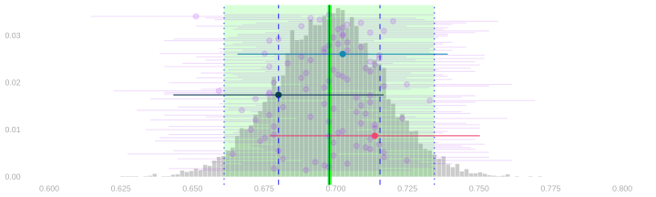
- We can do that using the sampling distribution of our point estimate.
- We’d draw arms out from the sampling distribution’s until they span 95% of point estimates.
- We can see that this is the right length by a shift of perspective.
- A point estimate can touch the mean with its arms iff1 the mean can touch it with equally long arms.
- So 95% of intervals cover if and only if 95% of point estimates are within the mean’s arms.
- In practice, we can’t do exactly that. We don’t know the sampling distribution.
- But we can use an estimate of the sampling distribution in its place.
- If it’s a good one, we’ll get approximately 95% coverage.
A Parametric Estimate of the Sampling Distribution
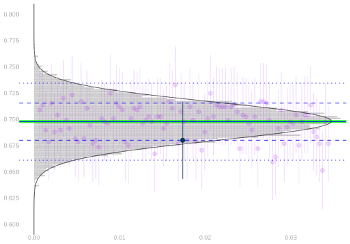
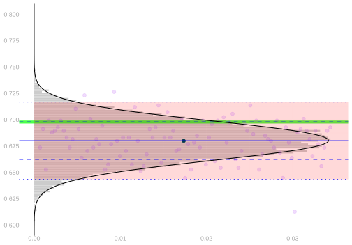
- Our estimate was based on knowledge of the parametric form of the sampling distribution.
- When we sample with replacement, it’s binomial.
- It’s the distribution of the frequency of heads in 625 flips of a coin with probability \(\theta\)
- where \(\theta\) is the ‘frequency of heads’ in the population.
- e.g. \(\theta\approx 0.70\) is the proportion of registered voters who will vote in our turnout example.
\[ P_\theta(\hat\theta = t) = \binom{n}{nt} \theta^{nt} (1-\theta)^{n(1-t)} \qqtext{ is the probability of the sample frequency being $t$} \]
- By parametric form, I mean a formula in terms of some parameters.
- That tells us what parameters we need to estimate to estimate the sampling distribution.
- In this case, the only (unknown) parameter is the \(\theta\), the frequency of heads in the population.
- We plugged in the sample frequency, \(\hat\theta\), to get our estimate of the sampling distribution.
\[ \hat P_\theta(\hat\theta = t) = \binom{n}{nt} \hat\theta^{nt} (1-\hat\theta)^{n(1-t)} \qqtext{ is our estimate of the same thing} \]
Sampling without Replacement
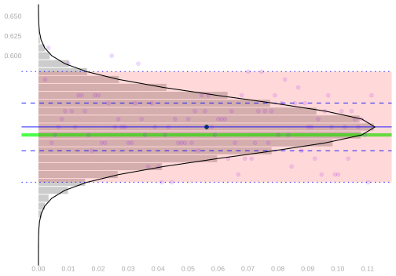
- We can do the same thing when we sample without replacement.
- We just have to use a different parametric form: the hypergeometric distribution.
\[ P_\theta(\hat\theta = t) = \binom{n}{nt} \frac{\{m(1-\theta)\}!}{\{m(1-\theta)-n(1-t)\}!} \times \frac{(m\theta)!}{(m\theta-nt)!} \times \frac{(m-n)!}{m!} \]
- Again, the only unknown parameter is \(\theta\). And we can plug in our point estimate to estimate this distribution.
\[ \hat P_\theta(\hat\theta = t) = \binom{n}{nt} \frac{\{m(1-\hat\theta)\}!}{\{m(1-\hat\theta)-n(1-t)\}!} \times \frac{(m\hat\theta)!}{(m\hat\theta-nt)!} \times \frac{(m-n)!}{m!} \]
An Exercise
A Survey
- We’re going to run a survey on Candy Preferences.
- I’ll draw a sample of size \(n=6\), with replacement, from the people in the room.
- They’ll pick candy and write their selection into a sample table on the board.
- In particular, we’ll write out whether they chose Chocolate (\(Y=1\)) or sour candy (\(Y=0\)).
- Then we’re going to estimate the sampling distribution in a new way.
- It’ll be a lot like calculating the actual sampling distribution.
- We’ll draw a sample of size \(n\) with replacement, use it to calculate our estimator, and repeat.
- What’s different is the population we’re drawing our sample from.
- We don’t have responses from the whole population, so we’ll draw it from the closest thing we’ve got: the sample.
- We call this bootstrapping.
- The estimate of the sampling distribution we get is called the bootstrap sampling distribution.
- I’ve drawn the sample we got from our survey on the board.
- Here’s how you draw a sample from the bootstrap sampling distribution of our point estimator.
- Roll your die 6 times to draw a sample of size \(n=6\) from the sample.
- Calculate the sample frequency. That’s one draw from the bootstrap sampling distribution. Write it down.
- If we all do this 5 times, we’ll have a bunch of draws.
- We’ll tally them up on the board and visualize the result as a histogram.
- A histogram of draws from the bootstrap sampling distribution.
Simulating a Few More Draws
Discussion
- If all has gone to plan, our histogram looks a lot like our binomial estimate of the sampling distribition.
- If we substitute in a computer tally of 10,000 draws from the bootstrap sampling distribution, we nail it.
- It looks like the bootstrap sampling distribution is the binomial estimate.
- Q. It is. How do you know?
- We know the distribution of the frequency of 1s in a sample of size \(n\) drawn with replacement …
- … from a population \(y_1\ldots y_m\) of binary responses with frequency \(\theta\).
- It’s \(\text{Binomial}(n, \theta)\). To estimate it, we plug in \(\hat\theta\), the frequency of 1s in our sample.
- So our Binomial estimate is the distribution of the frequency of 1s in a sample of size \(n\) drawn with replacement …
- … from ‘a population’ \(Y_1 \ldots Y_n\) with frequency \(\hat\theta\).
- What’s a draw from the bootstrap sampling distribution?
- Each bootstrap sample is the frequency of 1s in a sample of size \(n\) drawn with replacement …
- … from ‘a population’ \(Y_1 \ldots Y_n\) in which the frequency of 1s is \(\hat\theta\), the frequency of 1s in our sample.
- Because that ‘population’ is our sample.
The Bootstrap
The Bootstrap Interpretation in Our Turnout Poll

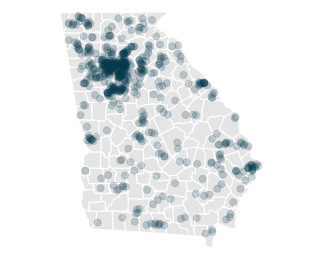
- The sampling distribution estimate we’ve used was \(\text{Binomial}(n,\hat\theta)\) for \(n=625\) and \(\hat\theta \approx 0.68\).
- It’s the distribution of the proportion heads in 625 flips of a coin with probability \(\hat\theta \approx 0.68\) of heads.
- where \(\hat\theta \approx 0.68\) is the proportion of voters we’ve polled who will vote.
- That is, it’s the sampling distribution of a ‘poll’ of the people in our sample, i.e.
- roll a 625-sided die 625 times
- call up the corresponding person in our sample
- and counting up the yeses we hear
- Note that this is random because we’re drawing with replacement.
- Each time we run this poll, we call each person in our sample 0,1,2,… times
- And the number of times we call them is random.
- If we plot our voters on a map, you can see the idea in visual terms.
- On the left, we have the population.
- In the middle, we have our sample. It’s drawn, with replacement, from the population.
- On the right, we have something else. A new sample drawn, with replacement, from the sample.
- Each ‘call’ that a person receives increases the size of their dot: \(\text{circle area} \propto \text{number of calls}\).
- In the sample, even though it’s drawn with replacement, all dots are the same size.
- Because we draw from such a large population, nobody gets called twice.
- In the bootstrap sample, dots vary in size.
- Because we draw \(n\) people from a sample of size \(n\), it’s almost impossible not to call somebody twice.
Bootstrapping
- Before the election, we don’t observe the population. But we do observe the sample.
- And we can sample from the sample act as if it were the population.
- We’ll take repeated random samples of size 625, with replacement, from our sample of size 625.
- We call these bootstrap samples and estimates based on them bootstrap estimates.
- The distribution of these estimates is called the bootstrap sampling distribution.
- If the sample is like the population, this should be like our estimator’s actual sampling distribution.
The Sample \[ \begin{array}{r|rrrr|r} i & 1 & 2 & \dots & 625 & \bar{Y}_{625} \\ Y_i & 1 & 1 & \dots & 1 & 0.68 \\ \end{array} \]
The Bootstrap Sample
\[ \begin{array}{r|rrrr|r} i & 1 & 2 & \dots & 625 & \bar{Y}_{625}^* \\ Y_i^* & 1 & 1 & \dots & 1 & 0.63 \\ \end{array} \]
The Population
\[ \begin{array}{r|rrrr|r} j & 1 & 2 & \dots & 7.23M & \bar{y}_{7.23M} \\ y_{j} & 1 & 1 & \dots & 1 & 0.70 \\ \end{array} \]
The ‘Bootstrap Population’ — The Sample \[ \begin{array}{r|rrrr|r} j & 1 & 2 & \dots & 625 & \bar{y}^*_{625} \\ y_j^* & 1 & 1 & \dots & 1 & 0.68 \\ \end{array} \]
The Bootstrap is Nonparametric
- We do not need to know the parametric form of our sampling distribution to use it.
- All we do is re-run our poll acting as if our sample were the population.
- We can do this no matter what we’re estimating.
- So let’s try it out on some stuff where we don’t know the parametric form.
Beyond Binary Responses
Vote History
- So far we’ve asked a binary question: will you vote?
- But voter files contain richer information.
- For each registered voter, we can see how many of the last 5 elections they voted in.
- Let’s call this vote history, and write it \(H_i\) in our sample and \(h_j\) in the population.
\[ \begin{array}{r|rrrr|r} i & 1 & 2 & \dots & 625 & \bar{H}_{625} \\ H_i & 1 & 4 & \dots & 2 & 2.8 \\ \end{array} \]
- We might want to estimate the average vote history in the population.
- Our point estimate would be the sample mean, \(\bar H_n = 2.8\).
- But what about the sampling distribution?
No Parametric Form This Time
- When the response was binary, we knew the parametric form: Binomial.
- The mean of \(n\) binary responses, each \(1\) with probability \(\theta\), has a \(\text{Binomial}(n, \theta)/n\) distribution.
- But now our responses take values in \(\{0, 1, 2, 3, 4, 5\}\).
- There’s no simple parametric form for the distribution of their mean.
- We could work one out.
- A response \(H_i\) has some probability \(p_0\) of being 0, \(p_1\) of being 1, and so on.
- The sum \(H_1 + \ldots + H_n\) is a sum of \(n\) such random variables, and its distribution could be computed by convolution.
- But that’s a pain. And it’d be an even bigger pain if our responses were continuous.
- The bootstrap gives us a way out. We don’t need to know the parametric form.
- We just resample from the sample.
The Sampling Distribution of Average Vote History
- That’s what the sampling distribution of average vote history looks like.
- As before, if we can estimate it we can use that estimate to get a 95% confidence interval.
- But, unlike before, we don’t have a nice parametric form like the Binomial.
- So we’ll use the bootstrap to estimate it.
The Bootstrap Sampling Distribution of Average Vote History
- It looks like it works in this case.
- The bootstrap sampling distribution is a good approximation to the actual sampling distribution.
- And the interval widths are similar.
But We Can’t Argue That It Should
- We’re no longer able to argue that it should work the way we did before.
- For the binary case, we took advantage of our knowledge of the parametric form.
- We knew the bootstrap sampling distribution was the plug-in binomial estimate.
- And we don’t have that now.
- We’ll get there. But we’ll need a few new tools we’ll develop in the coming weeks.
- Normal approximation, which gives us a parametric form for an approximation to our estimator’s sampling distribution.
- Techniques for variance calculation, which help us understand the parameters that go into it.